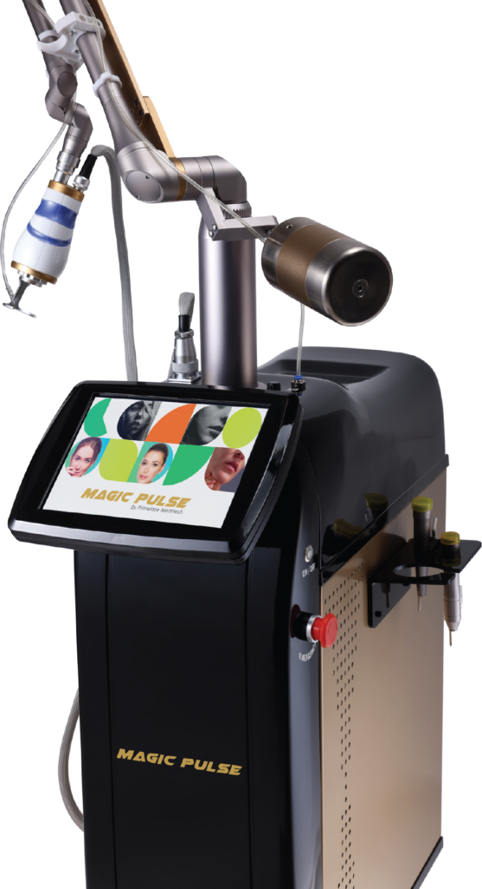
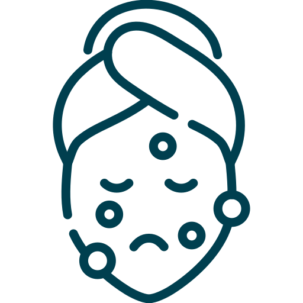
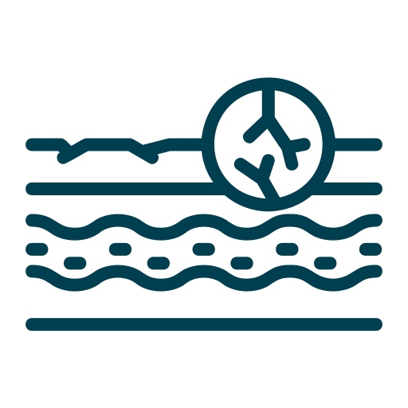
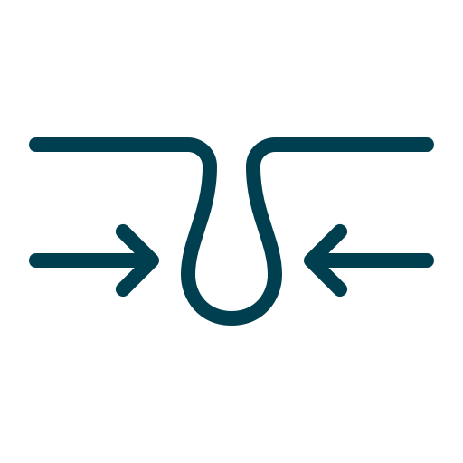
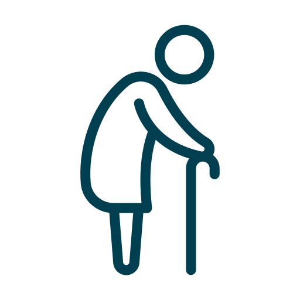
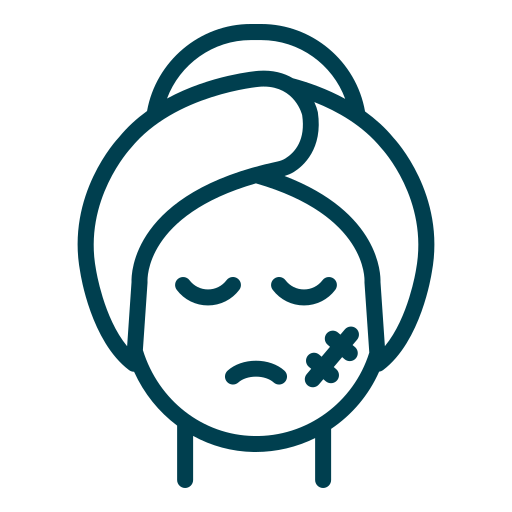
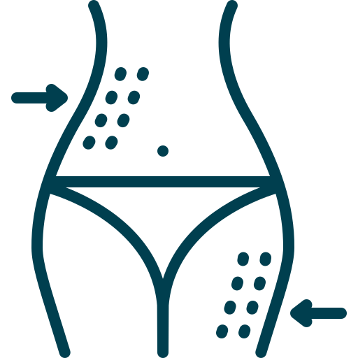
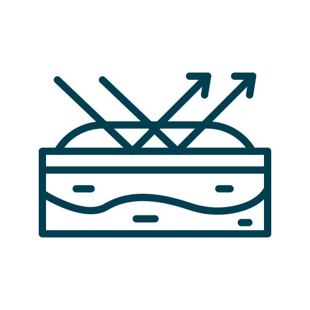
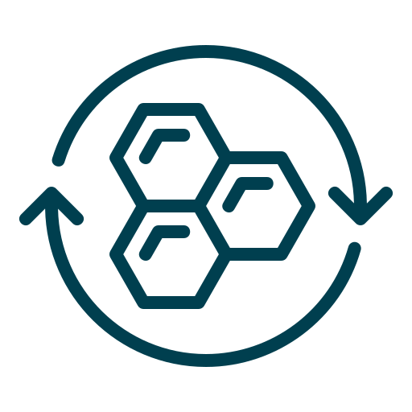

Fractional CO₂ LASER for Clearer, Smoother Skin
Safe and personalised LASER treatments tailored to your skin type, concerns, and recovery needs.
Fractional CO₂ LASER for Clearer, Smoother Skin
Safe and personalised LASER treatments tailored to your skin type, concerns, and recovery needs.

Fractional CO₂ LASER Treatment in Puttur
Puttur Skin Clinic is now equipped with advanced Fractional CO₂ LASER technology, a dermatologist-led skin resurfacing treatment used for acne scars, pigmentation marks, uneven skin texture, open pores, fine lines, surgical scars, selected stretch marks, and overall skin rejuvenation.
Fractional CO₂ LASER works by creating controlled micro-zones in the skin. This helps stimulate collagen production and supports the skin’s natural repair process over time. The treatment is commonly recommended for people who want to improve post-acne scars, rough skin texture, visible pores, pigmentation concerns, sun-damaged skin, and early signs of ageing.
At Puttur Skin Clinic, every LASER treatment is advised only after a detailed skin evaluation by Dr. Sachin Shetty. Skin type, scar depth, pigmentation tendency, sensitivity, healing response, and expected downtime are assessed before recommending the treatment.
This ensures that each patient receives a personalised and medically appropriate treatment plan.
What is Fractional CO₂ LASER?
Fractional CO₂ LASER is an advanced dermatology treatment used for skin resurfacing and collagen stimulation. It targets the skin in a fractional pattern, treating micro-areas while leaving surrounding skin intact. This helps the skin repair gradually and may improve the appearance of scars, texture irregularities, pigmentation marks, and fine lines.
It is not a one-size-fits-all treatment. A dermatologist must examine the skin and decide whether the procedure is suitable.
Why Choose Puttur Skin Clinic?
Puttur Skin Clinic offers dermatologist-led Fractional CO₂ LASER treatment in Puttur for patients looking for medically guided skin care. The treatment is performed under professional supervision, with proper pre-treatment and post-treatment guidance.
Patients from Puttur and nearby regions can consult Puttur Skin Clinic for acne scar treatment, laser skin resurfacing, pigmentation treatment, open pores treatment, scar revision, and skin rejuvenation.
Treatment is recommended only after consultation and skin examination.
Conditions Fractional CO₂ LASER May Help With

Acne scars
Post-acne marks
Pigmentation marks
Uneven skin texture

Open pores

Fine lines

Early signs of ageing

Surgical scars

Selected stretch marks

Sun-damaged skin
Dull skin
Skin resurfacing

Collagen stimulation
Book Your Skin Consultation
Get a personalised skin evaluation by Dr. Sachin Shetty at Puttur Skin Clinic to understand the right treatment options for acne scars, pigmentation, skin texture concerns, and overall skin rejuvenation.

FAQs
Frequently Asked Questions
We understand that navigating skincare can sometimes raise questions, and we’re here to ensure you have all the information you need.

What is the best treatment for stubborn acne scars in Mangalore's humid weather?
The best treatment for stubborn acne scars in coastal climates like Mangalore and Puttur is Fractional CO₂ laser therapy paired with subcision. At Puttur Skin Clinic, our advanced Fractional CO₂ laser safely resurfaces deeply pitted scars, while micro- subcision breaks down tough fibrous bands beneath the skin without clogging pores in high humidity.
How can I treat dark spots and pigmentation caused by sun exposure in Mangalore and Puttur?
Sun-induced dark spots and hyperpigmentation are highly responsive to medical-grade chemical peels and German BiAxis Q-Switched Nd:YAG laser treatments. These targeted dermatological procedures break down excess melanin deep within the skin layers while promoting rapid cellular renewal to restore an even tone.
Why does my skin break out more during the monsoon season in coastal Karnataka?
Monsoon breakouts happen because surging humidity mixes with excess sebum and sweat, creating an ideal breeding ground for acne-causing bacteria. To control this seasonal flare-up, avoid heavy oils and visit a dermatologist for medical-grade salicylic or glycolic acid chemical peels to keep your pores completely clear.
Where can I get advanced chemical peels for oily skin near Puttur?
You can get advanced, dermatologist-administered chemical peels at Puttur Skin Clinic, located at Almas Towers, Main Road, Bolwar. Our clinic provides customized salicylic, glycolic, mandelic, retinol yellow peel and combination peels specifically formulated to regulate sebum production and reduce active breakouts in oily skin types.
What skincare routine works best for the high humidity levels in Mangalore?
The ideal routine for high coastal humidity consists of a lightweight, non-comedogenic foaming cleanser, a hyaluronic acid gel moisturizer, and a matte-finish SPF 50+ sunscreen. Avoid heavy creams that trap sweat, and incorporate a dermatologist-prescribed exfoliating serum to prevent clogged pores.
Is the hard water in Mangalore causing my severe hair fall?
Hard water does not directly cause genetic hair thinning, but its high mineral content creates a brittle coating on the hair shafts, leading to severe breakage and dry, irritated scalps. If you notice sudden or patterns of thinning, it is crucial to consult a hair specialist for an accurate scalp diagnosis.
How can I cure persistent dandruff and itchy scalp aggravated by sweat?
Persistent dandruff fueled by coastal sweat requires prescription antifungal shampoos containing Ketoconazole or Zinc Pyrithione, paired with targeted topical lotions. Because excessive sweat accelerates Malassezia yeast growth, a dermatologist must evaluate your scalp to differentiate simple dandruff from seborrheic dermatitis.
What are the charges for advanced hair loss therapy like PRP or trichoscopy in Puttur?
Advanced hair loss therapy costs vary depending on the severity of the condition and the number of treatment sessions required. At Puttur Skin Clinic, a specialized Trichology or Hair-Related Consultation fee is ₹400, which includes a detailed clinical evaluation and trichoscopy.
Can a dermatologist in Dakshina Kannada help stop sudden hair thinning?
Yes, a dermatologist can effectively arrest sudden hair thinning (such as Telogen Effluvium or Alopecia Areata) by identifying underlying nutritional deficits, hormonal imbalances, or environmental triggers. Early clinical intervention using targeted medical therapies can fully restore your natural hair growth cycle.
How do I completely cure a recurrent fungal skin infection (ringworm) in hot weather?
To completely cure recurrent ringworm (Tinea), you must strictly complete a full course of oral and topical antifungals prescribed by a qualified dermatologist. Self-medicating with over-the-counter steroid creams thins the skin and causes the infection to mutate, making it highly resistant to standard treatments.
What is the best treatment for severe heat rashes and sweat allergies in Puttur?
The most effective treatment for severe heat rash (Miliaria) involves topical cooling agents like calamine, mild prescription anti-inflammatory lotions, and oral antihistamines. To prevent recurring friction and sweat duct blockage, wear loose cotton fabrics and keep the skin cool and dry.
Where can I find an expert dermatologist for eczema flare-ups during the rainy season?
Expert medical care for monsoon eczema is available at Puttur Skin Clinic and Laser Centre in Bolwar, Puttur. Dr. Sachin Manohar Shetty provides specialized barrier-repair treatments and customized anti-inflammatory therapies to stop intense itching and seasonal eczema flare-ups.
How can I manage chronic psoriasis while living in a high-humidity coastal climate?
Managing chronic psoriasis in a coastal climate requires a combination of tailored topical ointments, targeted moisturizers, and systemics or biologicals prescribed by a dermatologist. While humidity can prevent dry scaling, sweat can aggravate skin folds, making regular clinical monitoring essential.
Where can I find a clinic offering Fractional CO2 laser treatment near Puttur?
Advanced Fractional CO₂ laser treatments are offered directly at Puttur Skin Clinic & LASER Centre, located above Hotel New Hariprasad in Bolwar, Puttur. This dermatologist-led clinic utilizes state-of-the-art laser technology for deep acne scar revision, stretch marks, and comprehensive skin resurfacing.
Is laser scar removal safe for dusky or typical South Indian skin tones?
Yes, laser scar removal is completely safe for South Indian skin tones when performed by an expert dermatologist using optimized pulse widths and specific wavelengths. Advanced fractional lasers and Q-switched technologies are finely calibrated at our clinic to safeguard surrounding melanocytes and prevent post-inflammatory hyperpigmentation.
How much does a dermatologist consultation fee cost at Puttur Skin Clinic?
The standard consultation fees at Puttur Skin Clinic are highly affordable and structured by category:
Simple Dermatological Consultation: ₹300
Complicated Disease Evaluation (including Dermoscopy): ₹400
Trichology, Aesthetic, and Beauty Enhancement Services: ₹400
What dermatosurgery options are available for permanent mole or wart removal in Bolwar?
Puttur Skin Clinic provides advanced dermatosurgery options including Radiofrequency (RF) cauterization, electrocautery, and precise CO2 laser ablation. These minor, in-office procedures permanently remove warts, moles, skin tags, and facial lesions cleanly under local anesthesia with minimal to no downtime.
Are there clinics in Puttur that use advanced dermoscopy for skin patch analysis?
Yes, Puttur Skin Clinic features advanced dermoscopy and trichoscopy diagnostic tools operated directly by expert Consultant Dermatologist Dr. Sachin M. Shetty. This high-magnification digital analysis ensures highly accurate tracking of complex skin patches, moles, and hair disorders.
How can I book a morning appointment with Dr. Sachin Manohar Shetty?
To book a slot, call the clinic directly at 8 296 296 888 or 8 296 789 688 during morning hours, the previous day. Alternatively, patients can secure their slot instantly via the Official HealthPlix Online Booking Portal for Dr. Sachin Manohar Shetty.
Is Puttur Skin Clinic open on Saturday afternoons for consultations?
Yes, Puttur Skin Clinic is fully operational on Saturdays from 9:00 AM to 1:00 PM and afternoon hours from 3:00 PM to 6:00 PM. The clinic remains closed on Sundays.
Can I consult a skin specialist in Puttur without a prior hospital referral?
Yes, you can consult our skin specialist directly without any prior hospital or general practitioner referral. Puttur Skin Clinic accepts walk-ins and direct appointments for all general dermatology, cosmetology, and hair concerns.
What are the exact clinic timings for Dr. Sachin Shetty in Bolwar, Puttur?
The exact operating hours for Dr. Sachin M. Shetty are Monday through Saturday, from 10:00 AM to 1:00 PM and 3:00 PM to 6:00 PM. The clinic is closed all day on Sundays.
How do I reach Puttur Skin Clinic from the main Puttur KSRTC bus stand?
The clinic is located in Bolwar on the Main Road, situated directly above Hotel New Hariprasad (Almas Towers). It is a short 3-to-5 minute auto-rickshaw ride or drive heading north from the main Puttur KSRTC Bus Stand.
What skin issues does Fractional CO₂ Laser treat at Puttur Skin Clinic?
The Fractional CO₂ laser is primarily used for deep acne scar resurfacing, shrinking wide open pores, correcting uneven skin texture, and reducing surgical scars or stretch marks. It works by delivering microscopic columns of laser energy to stimulate deep collagen remodeling.
What is the recovery time after a Fractional CO₂ laser session?
The typical downtime is 3 to 4 days, during which the skin will exhibit mild redness, swelling, and subsequent tiny, fine brown crusts. Patients must apply a dermatologist-prescribed healing balm and strict sun protection while the skin naturally sheds these microscopic crusts.
Does a Fractional CO₂ laser procedure hurt?
The procedure is highly tolerable because a medical-grade topical numbing cream is applied to the target area 45 to 60 minutes before the treatment. Patients generally feel only a mild, warm prickling sensation during the actual laser passes.
How many Fractional CO₂ laser sessions will I need for acne scars?
Most patients require 4 to 6 sessions spaced 4 to 6 weeks apart to see optimal scar revision. Deeply pitted or ice-pick acne scars may require combining the laser with subcision or TCA CROSS treatments for maximum depth improvement.
What precautions must I take after a Fractional CO₂ laser treatment?
Post-care requires avoiding direct sun exposure for 2 weeks, wearing broad-spectrum SPF 50+ daily, and avoiding active skincare like retinoids or vitamin C for 7 days. Do not pick or scrub at the micro-crusts; allow them to slough off naturally to prevent scarring.
How does Diode Laser Hair Reduction work on unwanted body hair?
The Diode laser targets the melanin pigment within the hair follicle, converting light energy into heat to safely destroy the hair root without damaging surrounding skin. This progressively stops future hair growth, offering a permanent reduction in hair density.
Is Diode Laser Hair Reduction permanent?
Diode LHR provides permanent hair reduction, typically resulting in an 85% to 90% clearance of active hair follicles. Any residual hair that grows back over time is noticeably finer, lighter, softer, and much slower to grow.
How many sessions of Diode LHR are required for smooth skin?
An effective treatment protocol requires 6 to 8 sessions spaced roughly 4 to 6 weeks apart. Multiple sessions are necessary because the laser can only target hair follicles that are currently in their active growth phase (Anagen phase).
Can Diode Laser be safely performed on facial hair?
Yes, the Diode laser is highly safe and effective for treating facial hair concerns like upper lip, chin, or jawline growth caused by hormonal changes or PCOS. The treatment parameters are precisely calibrated by the dermatologist based on the thickness of your facial hair.
What should I avoid before a Diode Laser Hair Reduction session?
You must avoid waxing, plucking, threading, or using epilators for 3 to 4 weeks before your session, as the hair root must remain intact for the laser to target it. You should only close-shave the target area 24 hours prior to treatment.
What conditions are treated with the BiAxis German Q-Switched Nd:YAG laser?
Our advanced German BiAxis Q-Switched Nd:YAG laser treats deep hyperpigmentation, melasma, freckles, birthmarks, multi-colored tattoos, and carbon laser peels (Hollywood Peels). It shatters deep dermal ink and excess skin pigment into microscopic fragments without breaking the outer skin barrier.
How does a Q-Switched Nd:YAG laser remove permanent tattoos?
The laser emits ultra-short nanosecond pulses of high-energy light that selectively blast embedded tattoo ink particles. Once broken down into tiny fragments by the laser energy, your body’s natural lymphatic system safely metabolizes and flushes the ink out over several weeks.
What is a Carbon Laser Peel, and what are its benefits?
A Carbon Laser Peel involves applying a layer of liquid carbon to the face, which binds to oil and debris inside pores, followed by a Q-Switched laser pass to vaporize the carbon. This instantly purges impurities, shrinks wide open pores, controls acne, and delivers an immediate skin-brightening effect.
Is there any downtime after a Q-Switched Nd:YAG laser toning session?
No, standard Q-Switched laser toning sessions have zero downtime, making them a popular lunchtime procedure. Patients may experience mild, transient flushness for 1 to 2 hours, but can resume standard work and activities immediately.
How many sessions are needed to clear deep pigmentation or melasma?
Stubborn pigmentation or deep epidermal melasma usually requires 4 to 8 sessions spaced 3 to 4 weeks apart. Because hormonal pigmentation requires careful management, the laser is typically paired with specialized topical brighteners for sustained results.
Will the Fractional CO₂ laser burn or damage my South Indian skin tone?
No, it is completely safe when customized for our skin type. At Puttur Skin Clinic, Dr. Sachin Manohar Shetty precisely calibrates the laser’s pulse width and thermal depth to match Indian skin types (Fitzpatrick scale IV and V). This precise control ensures deep scar remodeling while completely safeguarding the surrounding skin from post-inflammatory hyperpigmentation (PIH).
Can I return to my office or college immediately after a Fractional CO₂ session?
You can resume normal indoor activities immediately, but your skin will need 3 to 5 days of healing. While there is no strict bed rest required, your face will look slightly red and sunburned, followed by tiny, microscopic crusts that flake off naturally. Most patients schedule their sessions on a Thursday or Friday afternoon to return to work smoothly by Monday.
Is Fractional CO₂ laser treatment a permanent fix for deep acne scars?
Yes, the scar reduction achieved with this laser is completely permanent. The laser creates microscopic treatment zones that force the body to produce brand-new, healthy collagen fibers. Once these deep pitted scars lift and level out with the surrounding skin, the results are long-lasting and do not reverse over time.
Is Diode Laser Hair Reduction more cost-effective than monthly waxing or threading in Puttur?
Yes, it saves significant time and money over a 2-year period. While waxing and threading are endless monthly expenses that cause skin sagging and ingrown hair, a personalized package of 6 to 8 Diode laser sessions permanently reduces hair growth by up to 90%. This eliminates the need for lifetime grooming appointments.
Can the Diode Laser safely treat thick facial hair caused by PCOS or hormonal imbalances?
Yes, the Diode laser is the gold standard for managing hormonal facial hair on the chin, upper lip, and jawline. At Puttur Skin Clinic, we combine targeted medical management for PCOS with precise laser protocols to safely destroy coarse hair roots, clearing your skin without causing breakouts or irritation.
Does Diode Laser Hair Reduction hurt, and will it cause skin darkening?
No, the procedure is highly comfortable and does not darken the skin. Our advanced Diode system features a built-in sapphire cooling tip that chills the skin on contact, reducing the sensation to a mild, cold prickle. Unlike waxing, which can cause friction patches, the laser actually helps clear up shaving bumps and dark shadow areas.
How many days before a wedding or special event should I get a Carbon Laser Peel (Hollywood Peel)?
The ideal time is 2 to 3 days before your event. The Q-Switched Carbon Laser Peel has zero downtime and delivers an immediate radiant glow by instantly stripping away dead skin, purging deep pores, and minimizing facial fuzz. Getting it a couple of days early ensures your makeup glides on flawlessly with maximum brightness.
Will the Q-Switched Nd:YAG laser completely remove my tattoo without leaving a scar?
Yes, it shatters the ink cleanly without scarring the skin. Older tattoo removal methods caused tissue burns, but our advanced Q-Switched laser emits ultra-short nanosecond pulses that selectively target only the ink pigment. Your body naturally flushes the broken particles away, leaving your natural skin texture intact.
Can this laser clear stubborn hyperpigmentation or melasma that creams haven't fixed?
Yes, because it targets deep dermal pigment that topical creams cannot reach. Melasma often sits in the deeper layers of the skin. The Q-Switched laser safely breaks down these stubborn pigment pockets into microscopic fragments, allowing your body to naturally clear them away for an even skin tone.
Do I need to book a separate consultation before starting a laser procedure?
Yes, an initial diagnostic evaluation is mandatory for patient safety. Dr. Sachin Manohar Shetty must assess your skin type, medical history, and specific condition to design a safe, customized laser protocol. A standard consultation can be completed on the same day as your first diagnostic session to save you an extra trip.